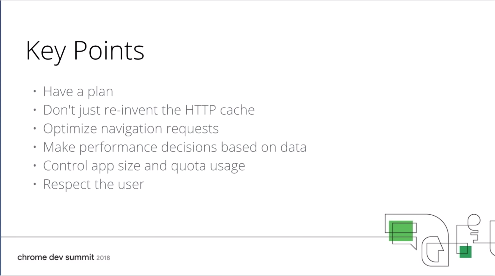

<!DOCTYPE html>
<html lang="ja">
<head>
          <title>ryoka419319 blog</title>
        <meta name="viewport" content="width=device-width, initial-scale=1" />
        <meta charset="utf-8" />
        <!-- twitter card metadata -->
<meta name="twitter:site" content="">
<meta name="twitter:title" content="Chrome Dev Summit 2018 Day1">
<meta name="twitter:description" content="">
        <!-- OG Tags -->
<meta property="og:url" content="/chrome-dev-summit-2018-day1.html"/>
<meta property="og:title" content="ryoka419319 blog | Chrome Dev Summit 2018 Day1" />
<meta property="og:description" content="" />
        <!-- favicon -->
        <!-- moment.js for date formatting -->
        <script src="/theme/js/moment.js"></script>
        <!-- css -->
        <link rel="stylesheet" type="text/css" href="/theme/css/main.css" />
		<script>
			
                /*! grunt-grunticon Stylesheet Loader - v2.1.2 | https://github.com/filamentgroup/grunticon | (c) 2015 Scott Jehl, Filament Group, Inc. | MIT license. */
    
    (function(e){function t(t,n,r,o){"use strict";function a(){for(var e,n=0;u.length>n;n++)u[n].href&&u[n].href.indexOf(t)>-1&&(e=!0);e?i.media=r||"all":setTimeout(a)}var i=e.document.createElement("link"),l=n||e.document.getElementsByTagName("script")[0],u=e.document.styleSheets;return i.rel="stylesheet",i.href=t,i.media="only x",i.onload=o||null,l.parentNode.insertBefore(i,l),a(),i}var n=function(r,o){"use strict";if(r&&3===r.length){var a=e.navigator,i=e.Image,l=!(!document.createElementNS||!document.createElementNS("http://www.w3.org/2000/svg","svg").createSVGRect||!document.implementation.hasFeature("http://www.w3.org/TR/SVG11/feature#Image","1.1")||e.opera&&-1===a.userAgent.indexOf("Chrome")||-1!==a.userAgent.indexOf("Series40")),u=new i;u.onerror=function(){n.method="png",n.href=r[2],t(r[2])},u.onload=function(){var e=1===u.width&&1===u.height,a=r[e&&l?0:e?1:2];n.method=e&&l?"svg":e?"datapng":"png",n.href=a,t(a,null,null,o)},u.src="data:image/gif;base64,R0lGODlhAQABAIAAAAAAAP///ywAAAAAAQABAAACAUwAOw==",document.documentElement.className+=" grunticon"}};n.loadCSS=t,e.grunticon=n})(this);(function(e,t){"use strict";var n=t.document,r="grunticon:",o=function(e){if(n.attachEvent?"complete"===n.readyState:"loading"!==n.readyState)e();else{var t=!1;n.addEventListener("readystatechange",function(){t||(t=!0,e())},!1)}},a=function(e){return t.document.querySelector('link[href$="'+e+'"]')},c=function(e){var t,n,o,a,c,i,u={};if(t=e.sheet,!t)return u;n=t.cssRules?t.cssRules:t.rules;for(var l=0;n.length>l;l++)o=n[l].cssText,a=r+n[l].selectorText,c=o.split(");")[0].match(/US\-ASCII\,([^"']+)/),c&&c[1]&&(i=decodeURIComponent(c[1]),u[a]=i);return u},i=function(e){var t,o,a;o="data-grunticon-embed";for(var c in e)if(a=c.slice(r.length),t=n.querySelectorAll(a+"["+o+"]"),t.length)for(var i=0;t.length>i;i++)t[i].innerHTML=e[c],t[i].style.backgroundImage="none",t[i].removeAttribute(o);return t},u=function(t){"svg"===e.method&&o(function(){i(c(a(e.href))),"function"==typeof t&&t()})};e.embedIcons=i,e.getCSS=a,e.getIcons=c,e.ready=o,e.svgLoadedCallback=u,e.embedSVG=u})(grunticon,this);
                
                grunticon(["/theme/css/icons.data.svg.css", "/theme/css/icons.data.png.css", "/theme/css/icons.fallback.css"]);
            </script>
        <noscript><link href="/theme/css/icons.fallback.css" rel="stylesheet"></noscript>
        <!-- menu toggle javascript -->
        <script type="text/javascript">
            document.addEventListener("DOMContentLoaded", initMenu);
            
            function initMenu(){
                var menu = document.getElementById("menu");
                var menulink = document.getElementById("menu-link");
                menulink.addEventListener("click", function toggleMenu(){
                        window.event.preventDefault();
                        menulink.classList.toggle('active');
                        menu.classList.toggle('active');              
                    });
            };
        </script>


    <meta name="tags" content="conference" />
    <meta name="tags" content="google" />
    <meta name="tags" content="chrome" />


<!-- Google AdSense -->
<script async src="https://pagead2.googlesyndication.com/pagead/js/adsbygoogle.js"></script>
<script>
  (adsbygoogle = window.adsbygoogle || []).push({
    google_ad_client: "ca-pub-6379280991526072",
    enable_page_level_ads: true
  });
</script>
<!--/ Google AdSense -->
</head>
<body>
    <div role="banner" id="masthead">
        <header>
            <h1><a href="/">Ryoya's Blog</a></h1>
            <a href="#menu" id="menu-link">more stuff</a>
            <nav id="menu">
                <ul>
                            <li class="active"><a href="/category/conference.html">Conference</a></li>
                </ul>
            </nav>
        </header>
    </div>
        <div class="page" role="main">
  <div class="article" role="article">
    <article>
        <footer>
            <a name="top"></a>
            <p>
              <time datetime=" 2018-11-12 00:00:00+09:00">
                <script>document.write(moment('2018-11-12 00:00:00+09:00').format('LL'));</script>
              </time>
            </p>
        </footer>
        <header>
          <h2>
            Chrome Dev Summit 2018 Day1
          </h2>
        </header>
      <div class="content">
         <h1>Chrome Dev Summit Day1</h1>
<h2>全体</h2>
<p>Chrome Dev Summit は、年に１回、Chrome のエンジニアと Web デベロッパが交わるためのイベントです。</p>
<p>今年でこのイベントは、６回目となり、Chrome は、ちょうど１０年経ちました。</p>
<ul>
<li>期間：2018/11/12,13</li>
<li>参加費：無料</li>
<li>場所：サンフランシスコ</li>
<li>URL：<a href="https://developer.chrome.com/devsummit/">リンク</a></li>
</ul>
<h2>8:00~ Registration and Breakfast</h2>
<p>まずはじめに、列に並び、参加登録と朝食を食べました。</p>
<p>どんな感じか分からず、8時半にはついていましたが、</p>
<p>そんなに時間はいらなかったです。</p>
<p></p>
<p>朝食を食べた後は、やることもなかったので、近くを散策。</p>
<p></p>
<h2>10:00~ Day 1 Keynote</h2>
<h3>オープニングビデオ</h3>
<p>割とギリギリで入ったので、後ろの方で見ることになりました。</p>
<p></p>
<p>Chrome ブラウザがリリースされてちょうど１０年ということで</p>
<p>誕生日ケーキを作る映像から始まりました。</p>
<p>内容は、<a href="https://www.youtube.com/watch?v=CbU9GzgS0HY&amp;list=PLNYkxOF6rcIDjlCx1PcphPpmf43aKOAdF&amp;index=14">Chrome の今までを料理になぞらえた物</a>で、
会場内でもかなり笑いが起きていました。</p>
<h3>Web の今まで</h3>
<ul>
<li>
<p>Chrome comics では、マルチタスク、V8 JavaScript Runtime が使われました。</p>
</li>
<li>
<p>Google map では、ajax が使われました。</p>
</li>
<li>
<p>ブラウザ上で、360度見渡せるベクターマップ、3Dモデル、衛星画像を表示できるようになりました。</p>
</li>
<li>
<p>AutoCAD や figma も使えるようになりました。</p>
</li>
<li>
<p>ハイクオリティーなゲーム「CROSSY ROAD 」も開発されました。</p>
</li>
<li>
<p>この10年で Chrome のロゴや検索画面のデザインも変わりました。</p>
</li>
<li>
<p>autofill （自動でフォーム入力を行う）機能も追加されました。</p>
</li>
<li>
<p>9月には、dino ゲームの birthday バージョンを実施し、2億7千万回プレイされました。</p>
</li>
<li>
<p>Chrome のリリース時は、安定性と安全性のためタブごとに別々のプロセスで実行させるようにしました。</p>
</li>
<li>
<p>その後この機能は、スタンダードとなりました。</p>
</li>
<li>
<p>iframe も同様に別プロセスで実行されます。</p>
</li>
<li>
<p>現在では、HTTP の場合、検索バーに「Not Secure」と表示されるようになりました。</p>
<p>form フィールドを使用する際に強調表示されます。</p>
<p>現在では、上位 100 サイトの 80 % が完全に HTTPS になっています。</p>
</li>
<li>
<p>10年を節目に V8 では、100倍 ガベージコレクションできるようになりました。</p>
</li>
<li>
<p>V8 は、Web アセンブリにも対応しました。</p>
</li>
<li>
<p>これによって、C や C++ も使えるようになり、10 倍読み込み時間が高速にもなりました。</p>
</li>
<li>
<p>Chrome は、AV1 という次世代のメディアコーデックに対応しました。</p>
</li>
<li>
<p>WebP という画像フォーマットは、30% 他のフォーマットより容量を減らすことができました。</p>
</li>
</ul>
<p>Web にとって、速度改善は欠かせないものであり、
JavaScript は、ダウンロード、コンパイル、実行するのでそのボトルネックにもなります。</p>
<p>それは、Lighthouse というページスピードを分析するツールで見ることができます。</p>
<h3>pinterst の例</h3>
<p>pinterest は、Service Worker を使うことで、
悪い環境でも 23 秒から 3.9 秒でページ読み込みをするように短縮することができました。</p>
<p>Web Packaging は、Web ページに署名するための鍵を持ったり、
それを配って安全にアクセスできたりすることができます。</p>
<p>portals（新しい形の iframe）はシームレスに動かすことができます。</p>
<h3>squoosh について</h3>
<p>google は、最近の Web 技術を使った <a href="https://squoosh.app/">squoosh</a> をリリースしました。</p>
<p>簡単にスタイルを変えたりできます。</p>
<p>squoosh は、複雑な操作をスムーズに行うことができます。</p>
<h3>新しい API</h3>
<p>Worklets API は、アニメーションを作り、カスタム描画、カスタムレイアウト が簡単にできます。</p>
<p>Virtual Scroller API は、スムーズなスクロールを実現できます。</p>
<p>Scheduler API は、ブラウザで過ごす時間を制御することができます。</p>
<h3>Twitter の例</h3>
<p>Twitter は、Chrome canaly で PWA を実現しています。</p>
<p>さらに新たな API として、WebAuthn に対応しています。</p>
<p>これは、バイオ認証が可能で複数認証に使われます。</p>
<h3>web.dev について</h3>
<p>ハイクオリティな Web 体験のため、web.dev beta を開発しました。</p>
<p>スピード, 見つけやすさ, 信頼性 を見ることができます。</p>
<p>チュートリアルとサンプルによって、使い方を学ぶことができます。</p>
<h3>Service Worker</h3>
<p>serviceworkies.com では Service Worker について、見ることができます。</p>
<h3>Project VisBug</h3>
<p>Project VisBug は、エンジニアとデザイナーが意思疎通するためのツールです。</p>
<h2>10:30~ Get Down to Business: Why the Web Matters</h2>
<p>
これらの企業がwebパフォーマンスのために投資を行い、ビジネスに影響を与えました。</p>
<h3>spotify</h3>
<p>モバイルweb音楽プレーヤーを使用すれば、より早く企業は成長するのか？</p>
<p>今まで、spotify を知らない人に対して、聞かせたい音楽のリンクを送ると
１曲の音楽を聴くためだけにダウンロードを促されていました。</p>
<p>多くの人が Web 経由でリンクを訪問したが、アプリのダウンロードが必要だったため、諦めるユーザが多かったです。</p>
<p>spotify のユーザは、ブラジル人が多く、その多くが1G以下のスマートフォンを使用していたので、
ブラジルのユーザを対象にテストを行いました。</p>
<p>試しに限られたユーザに対して、ダウンロード前に1曲再生できるようにすると25%再生数が増加しました。</p>
<p>次にテストは、以下のパターンで行ないました。</p>
<ol>
<li>
<p>アプリでのみ再生できるパターン</p>
</li>
<li>
<p>webでも再生できるパターン</p>
</li>
</ol>
<p>その後、54%の再生数増加、14%のアクティブユーザの増加、30%のログインユーザの増加しました。</p>
<p>Web での再生ができることでネイティブアプリへのアクセスが減る懸念があったが、
結果は、30%のダウンロード数が増加しました。</p>
<h4>まとめ</h4>
<ol>
<li>
<p>顧客がそのサービスへアクセスする際の障壁を理解する</p>
</li>
<li>
<p>その後、その障壁を取り除くことができるかを理解する</p>
</li>
<li>
<p>最後にテストを行うことで spotify のように成功するだろう</p>
</li>
</ol>
<h3>STARBUCKS</h3>
<p>どのようにして、Web を使用してユーザへの良い経験を届けられるか？</p>
<p>これを考える前にすでにいくつかのことは分かっていました。</p>
<ol>
<li>
<p>月に600万人以上のユーザが iOS のネイティブアプリより Web を使用していました。</p>
</li>
<li>
<p>いろんな場所に店舗を持っているため、いろんなネットワーク環境が存在していました。</p>
</li>
</ol>
<p>それらの環境ですぐにアクセスでき、使用することが求められていました。</p>
<p>これに対応するために Web の様々な機能を使用しました。</p>
<ul>
<li>
<p>JS,CSSを小さくすること</p>
</li>
<li>
<p>キャッシング</p>
</li>
<li>
<p>CDN を使って画像は最適化</p>
</li>
</ul>
<p>これらによって、STARBUCKS では、Web アクセスの時間は２倍になりました。</p>
<p>Credential Management API を使用することでサインインをより安全に行うようにしました。</p>
<p>ホームスクリーンへ保存することで素早くアプリを使用することができるようにしました。</p>
<p>PWA 対応しているので、ネイティブアプリのように動作します。</p>
<p>結果として、Web 経由で STARBUCKS のユーザとして登録した数は65%増加しました。</p>
<h3>Pinterest</h3>
<p>Pinterest では、3ヶ月で１からアプリを作り直しました。</p>
<ul>
<li>
<p>最初のページロード時間を４倍に</p>
</li>
<li>
<p>その後のページロードは６倍に</p>
</li>
<li>
<p>JSは650kbから200kbに</p>
</li>
<li>
<p>CSSは160kbから6kbに</p>
</li>
</ul>
<p>pinterest では、これらの状態を保つために2つの指標を重視しています。</p>
<ol>
<li>
<p>JSバンドルサイズ</p>
<p>ロギングすることで js バンドルサイズを確認できるようにしました。</p>
<p>そして、アラート付きのダッシュボードを作りました。</p>
<p>１行のコードから膨大なサイズの js をダウンロードするものもあったので、
特定のソースからのみダウンロードできるようにホワイトリストを作りました。</p>
</li>
<li>
<p>Pinner Wait Time</p>
<p>これは、インタラクティブな時間と画像の読み込み時間</p>
</li>
</ol>
<p>そして、pinterestでは、</p>
<ul>
<li>
<p>週に 103% のユーザ増加</p>
</li>
<li>
<p>300% のセッション時間の増加</p>
</li>
</ul>
<p>の結果を残しています。</p>
<p>さらにネットワーク帯域の少ない新興国では、</p>
<ul>
<li>
<p>週に 300% のユーザ増加</p>
</li>
<li>
<p>見られたピンの数は 600% 増加</p>
</li>
</ul>
<p>という結果になっています。</p>
<p>pinterest では、見られたピンの数が直接収益に影響しているので、これは大きな成果でした。</p>
<h4>まとめ</h4>
<ul>
<li>
<p>ユーザ数を増やしたいのなら摩擦をなくすこと</p>
</li>
<li>
<p>ユーザとの接触を増やしたいのなら workbox によってキャッシュすること</p>
</li>
<li>
<p>パフォーマンスを気にするならパフォーマンスバジェットを重要視すること</p>
</li>
</ul>
<h2>11:00~ Break</h2>
<h2>11:30~ State of the Union for Speed Tooling</h2>
<p>あなたが何かをよくしたいなら、まずは測定することが大切です。</p>
<p>指標として、以下を使いました。
</p>
<p>Lighthouse は、OSS で誰でも使えますが、認証は必要です。</p>
<h3>Lighthouse</h3>
<p>Lighthouse は、以下の変更を行いました。</p>
<ul>
<li>
<p>ランタイム時間の短縮</p>
</li>
<li>
<p>スコアの範囲を変更（より厳しくなった）</p>
</li>
<li>
<p>プリセット名の変更。Fast 3G → Slow 4G</p>
</li>
</ul>
<h3>Chrome UX Report</h3>
<p>これは、メトリックスを Web 上で提供します。</p>
<p>パフォーマンスツールは統合されました。</p>
<h3>PageSpeed Insights</h3>
<p>PageSpeed Insights は、今は lighthouse で動いています。</p>
<h3>PageSpeed API</h3>
<p>PageSpeed API は、Lighthouse APIに変更しました。</p>
<p>APIについては、<a href="https://developers.google.com/speed/docs/insights/v5/get-started">こちら</a> を見てください。</p>
<h4>まとめ</h4>
<ol>
<li>
<p>頻繁に測定を行うこと</p>
</li>
<li>
<p>Lighthouse での分析を素早く行うために PageSpeed Insights を使うこと</p>
</li>
<li>
<p>ユーザパフォーマンス観点をまとめるために Chrome UX Report を使う</p>
</li>
<li>
<p>PageSpeed Insights API を使ってパフォーマンスを評価すること</p>
</li>
</ol>
<h2>12:00~ Speed Essentials: Key Techniques for Fast Websites</h2>
<p>画像ファイル、Web フォント、JS がパフォーマンスに重大な影響を与えます。</p>
<h3>画像ファイルについて</h3>
<ul>
<li>
<p>適切なフォーマット</p>
</li>
<li>
<p>適切に圧縮を行う</p>
</li>
<li>
<p>表示に適したサイズにすること</p>
</li>
<li>
<p>必要な時のみロードすること</p>
</li>
</ul>
<p>これらを自動でシステム化しておくことが重要です</p>
<h3>Animation GIF について</h3>
<p>1.4s のもので 6.8MB になります。</p>
<p>これが、MPEG4では、420kbになります。</p>
<p>なので、例えば、twitter では、Animation GIF をアップロードすると自動的に MPEG に変換しています。</p>
<p>以下のコマンドで変換できます。</p>
<div class="highlight"><pre><span></span>ffmpeg -i dog.gif dog.mp4
</pre></div>


<p>次に</p>
<div class="highlight"><pre><span></span><span class="p">&lt;</span><span class="nt">img</span> <span class="na">src</span><span class="o">=</span><span class="s">&quot;dog.gif&quot;</span><span class="p">&gt;</span>
</pre></div>


<p>から</p>
<div class="highlight"><pre><span></span><span class="p">&lt;</span><span class="nt">video</span> <span class="na">autoplay</span> <span class="na">loop</span> <span class="na">muted</span> <span class="na">playsinline</span><span class="p">&gt;</span>
    <span class="p">&lt;</span><span class="nt">source</span> <span class="na">src</span><span class="o">=</span><span class="s">&quot;dog.mp4&quot;</span> <span class="na">type</span><span class="o">=</span><span class="s">&quot;video/mp4&quot;</span><span class="p">&gt;</span>
<span class="p">&lt;/</span><span class="nt">video</span><span class="p">&gt;</span>
</pre></div>


<p>に書き換えます。</p>
<p>こうすることで Animation GIF のように見せることができます。</p>
<h3>WebP</h3>
<p></p>
<p>JPEG や PNG  より25~35% 小さいです。</p>
<div class="highlight"><pre><span></span><span class="p">&lt;</span><span class="nt">picture</span><span class="p">&gt;</span>
    <span class="p">&lt;</span><span class="nt">source</span> <span class="na">type</span><span class="o">=</span><span class="s">&quot;image/webp&quot;</span> <span class="na">srcset</span><span class="o">=</span><span class="s">&quot;flower.webp&quot;</span><span class="p">&gt;</span>
    <span class="p">&lt;</span><span class="nt">source</span> <span class="na">type</span><span class="o">=</span><span class="s">&quot;image/jpeg&quot;</span> <span class="na">srcset</span><span class="o">=</span><span class="s">&quot;flower.jpg&quot;</span><span class="p">&gt;</span>
    <span class="p">&lt;</span><span class="nt">img</span> <span class="na">src</span><span class="o">=</span><span class="s">&quot;flower.jpg&quot;</span><span class="p">&gt;</span>
<span class="p">&lt;/</span><span class="nt">picture</span><span class="p">&gt;</span>
</pre></div>


<p>このようにすることでサポートしているブラウザのみ WebP を使うことができます。</p>
<h3>AV1</h3>
<p>１番の特徴は 45~50% 圧縮できるということです。</p>
<p>ただ、まだ新しいので、実用的ではないです。</p>
<h3>画像ファイルの圧縮について</h3>
<p>オススメは、80~85% の品質レベルを試してみることです。</p>
<p>こうすることで、ファイルサイズを 30~40% 減らすことができます。</p>
<p>最も一般的なツールとしては、imagemin があります。</p>
<p>ほとんどのサイトでは、3~5 サイズを用意しています。</p>
<p>サイズ変更するツールは、Sharp と Jimp が有名です。</p>
<p>Sharp は、C/C++ コンパイラのインストールが必要だが、リサイジングは高速です。</p>
<p>複数サイズの画像を用意した場合は、HTML を以下のようにする必要があります</p>
<div class="highlight"><pre><span></span><span class="p">&lt;</span><span class="nt">img</span> <span class="na">srcset</span><span class="o">=</span><span class="s">&quot;flower-small.jpg 480w, flower-large.jpg 1080w&quot;</span> <span class="na">sizes</span><span class="o">=</span><span class="s">&quot;50vw&quot;</span> <span class="na">src</span><span class="o">=</span><span class="s">&quot;flower-large.jpg&quot;</span><span class="p">&gt;</span>
</pre></div>


<p>※ pxの代わりにwを使います。</p>
<h3>lazy loading</h3>
<p>よく使われるツールは、npm パッケージの lazysizes と lozad です。</p>
<p>そして、HTML は、以下のようにします。</p>
<div class="highlight"><pre><span></span><span class="p">&lt;</span><span class="nt">head</span><span class="p">&gt;</span>
    <span class="p">&lt;</span><span class="nt">script</span> <span class="na">src</span><span class="o">=</span><span class="s">&quot;lazysizes.min.js&quot;</span> <span class="na">async</span><span class="p">&gt;&lt;/</span><span class="nt">script</span><span class="p">&gt;</span>
<span class="p">&lt;/</span><span class="nt">head</span><span class="p">&gt;</span>
<span class="p">&lt;</span><span class="nt">body</span><span class="p">&gt;</span>
   <span class="p">&lt;</span><span class="nt">img</span> <span class="na">data-src</span><span class="o">=</span><span class="s">&quot;flower.jpg&quot;</span> <span class="na">class</span><span class="o">=</span><span class="s">&quot;lazyload&quot;</span><span class="p">&gt;</span>
<span class="p">&lt;/</span><span class="nt">body</span><span class="p">&gt;</span>
</pre></div>


<p>現在、Chrome でもネイティブで lazy load を行おうとしています。</p>
<div class="highlight"><pre><span></span><span class="p">&lt;</span><span class="nt">img</span> <span class="na">src</span><span class="o">=</span><span class="s">&quot;flower.jpg&quot;</span> <span class="na">lazyload</span><span class="o">=</span><span class="s">&quot;auto&quot;</span><span class="p">&gt;</span>

<span class="p">&lt;</span><span class="nt">img</span> <span class="na">src</span><span class="o">=</span><span class="s">&quot;flower.jpg&quot;</span> <span class="na">lazyload</span><span class="o">=</span><span class="s">&quot;on&quot;</span><span class="p">&gt;</span>

<span class="p">&lt;</span><span class="nt">img</span> <span class="na">src</span><span class="o">=</span><span class="s">&quot;flower.jpg&quot;</span> <span class="na">lazyload</span><span class="o">=</span><span class="s">&quot;off&quot;</span><span class="p">&gt;</span>
</pre></div>


<h3>Fonts</h3>
<p>まずは、システムフォントを使用して、カスタムフォントのダウンロードが完了したタイミングで
それを表示することをお勧めします。</p>
<div class="highlight"><pre><span></span><span class="p">@</span><span class="k">font-face</span> <span class="p">{</span>
    <span class="nt">font-family</span><span class="o">:</span> <span class="s1">&#39;Pacifico&#39;</span><span class="o">;</span>
    <span class="nt">src</span><span class="o">:</span> <span class="nt">url</span><span class="o">(..</span><span class="p">.</span><span class="nc">pacifico</span><span class="p">.</span><span class="nc">woff2</span><span class="o">)</span> <span class="nt">format</span><span class="o">(</span><span class="s1">&#39;woff2&#39;</span><span class="o">);</span>
    <span class="nt">font-display</span><span class="o">:</span> <span class="nt">swap</span><span class="o">;</span> <span class="o">//</span> <span class="nt">これを追加するのみ</span>
<span class="p">}</span>
</pre></div>


<h3>Javascript</h3>
<p>まずは、バンドルを分けることを考えます。</p>
<div class="highlight"><pre><span></span><span class="kr">import</span><span class="p">(</span><span class="s1">&#39;module&#39;</span><span class="p">)</span>
   <span class="p">.</span><span class="nx">then</span><span class="p">(</span><span class="nx">module</span> <span class="p">=&gt;</span> <span class="nx">module</span><span class="p">.</span><span class="k">default</span><span class="p">)</span>
   <span class="p">.</span><span class="nx">then</span><span class="p">(</span><span class="nx">module</span> <span class="p">=&gt;</span> <span class="nx">doSomethingCool</span><span class="p">(</span><span class="nx">module</span><span class="p">))</span>
</pre></div>


<p>このようにして、必要なモジュールを必要になったタイミングで読み込むようにします。</p>
<p>Vue.js や Angular、React でもこれらは抽象化されて実装されています。</p>
<h3>preload</h3>
<div class="highlight"><pre><span></span><span class="p">&lt;</span><span class="nt">link</span> <span class="na">rel</span><span class="o">=</span><span class="s">&quot;preload&quot;</span> <span class="na">as</span><span class="o">=</span><span class="s">&quot;script&quot;</span> <span class="na">href</span><span class="o">=</span><span class="s">&quot;critical.js&quot;</span><span class="p">&gt;</span>
</pre></div>


<h3>@babel/preset-envを使う</h3>
<p>NewYork Timesで、これは使用されています。</p>
<p>Sapper+rollup を使用してモジュール分割を行なっています。</p>
<p>Coverage タブからバンドルサイズを確認できます。</p>
<h3>webpack bundle analyzer</h3>
<p>bundlephobia でライブラリのコストを確認できます。</p>
<p>CI で Lighthouse を動かすことができるので定期的にバンドルサイズを確認することができます。</p>
<h3>ユニクロ</h3>
<p>ユニクロは、パフォーマンスの改善を行うことにより以下の結果を得ました。</p>
<ul>
<li>
<p>直帰率（初めてサイト内の ページ に訪問した後に、サイト内の他の ページに行くことなく離脱したセッションの割合）が 14% 低下</p>
</li>
<li>
<p>平均滞在時間が31%増加</p>
</li>
<li>
<p>セッションあたりの閲覧ページ数が25%増加</p>
</li>
</ul>
<h2>12:30~ Building Faster, More Resilient Apps with Service Worker: A Caching Strategy Deep Dive</h2>
<p>Service Worker は、すべてのブラウザの最新版でサポートされています。</p>
<h3>Service Worker のメリットデメリット</h3>
<h4>メリット</h4>
<ul>
<li>
<p>ネットワークリクエストをスキップすることができます。</p>
</li>
<li>
<p>バックグラウンドで更新を探しつつ、レスポンスを返すことができます。</p>
</li>
<li>
<p>毎回、完全なHTMLを読み込まず、一部のみ読み込むことができます。</p>
</li>
<li>
<p>通常、パース、コンパイル、実行するJSコードだが、自動的にバイトコードをキャッシュに格納することができます。</p>
<p>（これにより、繰り返しアクセスの場合、より早く処理できます。）</p>
</li>
</ul>
<h4>デメリット</h4>
<ul>
<li>
<p>Service Worker を起動する時間が必要になります。</p>
<p>
Service Worker を使う場合、通常、リクエストを中継する形になります。</p>
<p>
なので、多少の遅延は発生します。</p>
<p>以下のコードによって、Service Worker のスタートアップタイムを計ることができます。</p>
<p><code>js
const entry = performance.getEntriesByName(url)[0];
const swStartupTime = entry.requestStart - entry.workerStart;</code></p>
</li>
<li>
<p>キャッシュ読み込みの時間は、常に一定ではないです。</p>
<p>初めは、キャッシュにデータを取りに行きますが、

エラーやタイムアウトになると、ネットワークに取りに行きます。
</p>
<p>
さらに遅延は、このようになります。</p>
<p>キャッシュタイムも計ることができます。</p>
<p><code>js
const entry = performance.getEntriesByName(url)[0];
// transferSize が 0 ということは、キャッシュが使用されたということ
if (entry.transferSize === 0) {
   const cacheTime = entry.responseStart - entry.requestStart;
}</code></p>
<p>もっと細かく見たい場合は、以下のようにもできます。</p>
<p><code>js
const cacheStart = performance.now();
const response = await caches.match(event.request);
const cacheEnd = performance.now();</code></p>
</li>
<li>
<p>過度なプリキャッシングがネットワーク帯域を奪います。</p>
<p>これに対応するためには、サービスワーカーをloadまで登録しないことです。</p>
<p><code>js
addEventListener('load', () =&gt; {
    navigator.serviceWorker.register('sw.js');
});</code></p>
</li>
</ul>
<h3>workbox</h3>
<p>Service Worker を実装するためのライブラリです。</p>
<p>ナビゲーションリクエストをスピードアップする3つの方法</p>
<ul>
<li>
<p>すぐにキャッシュからレスポンスを返します。（その後、更新を確認する）</p>
<p></p>
</li>
<li>
<p>ネットワークが必要な時は、必要なコンテンツのみ取得し、他の部分と結合させます。</p>
<p>workbox を使用すれば、簡単にこれが実装できます</p>
<p></p>
</li>
<li>
<p>navigation preload を使用することで、ネットワークリクエストとサービスワーカーの移動を並列に行います。</p>
<p>
</p>
<p>アプリの現在のストレージ使用量の確認は、以下でできます。
</p>
</li>
</ul>
<p>   workbox には、gulp と webpack の両方のキャッシュの更新を行うプラグインがあります。</p>
<ul>
<li>
<p>常に Slow 3G を使ってテストしてください。</p>
</li>
<li>
<p>アプリケーションによって占められるストレージ量を確認してください。</p>
</li>
<li>
<p>save-data モードを使用している場合、積極的なプリキャッシングはしないでください。</p>
</li>
<li>
<p>どれくらいキャッシュを使うかは、effectiveType を使って決定してください。</p>
</li>
<li>
<p>必要な場合は、opt-in UX パターンを使ってください。</p>
</li>
</ul>
<p>この Service Worker についても web.dev に記載しているのでそこで学ぶことができます。</p>
<p></p>
<h2>13:00~ Lunch</h2>
<h2>14:30~ Smooth Moves: Rendering at the Speed of Right ®</h2>
<p>スムーズであることは、アプリと直接つながっているように感じることができます。</p>
<p>46% の人がモバイルエクスペリエンスが中断されたら、以降、そのサイトから購入することがないと答えました。</p>
<p>また、79% の人が使いやすいサイトだと再度訪れて誰かと共有すると答えました。</p>
<h3>パフォーマンスを認識する4つの指標</h3>
<p></p>
<p>スムーズなサイトを作るためには、ローエンドのハードウェアで 60FPS 必要です。</p>
<h3>Chrome DevTools</h3>
<p>いくつか便利な機能がありますので、ぜひ使ってみてください。</p>
<ul>
<li>
<p>Rendering パネル</p>
</li>
<li>
<p>Layers パネル</p>
</li>
<li>
<p>Performance monitor パネル</p>
</li>
<li>
<p>Audit パネル（Lighthouse）</p>
</li>
</ul>
<p>ブラウザの要素を描画するには、まず、DOMツリーを作ります。
</p>
<p>次にスタイルの計算を行います。
</p>
<p>次にレイアウトを決めます。
</p>
<p>次にペイントします。
</p>
<p>その後、それを表示します。
</p>
<p>例えば、div.style.left を変える場合は、かなりのタスクをし直さないといけないですが、
translateX を使うことでそのいくつかは省けます。
</p>
<p>パフォーマンスに影響するので max-height にアニメーションしないでください。</p>
<p>レイアウト情報が必要なプロパティを読み込むことがレイアウトを変更する前に重要なことです。</p>
<p>送信ボタンを押した後に実際に送信されるまで次のメッセージを送信させないようにするのではなく、
非同期に次々送信できるようにするとより良いです。</p>
<p>
UI の影響を測定するために役立ちます。</p>
<h3>アプリケーションのパフォーマンスを向上させる方法</h3>
<ol>
<li>
<p>ブラウザプリミティブを見つけること
    これは、スクロールしている間、スクロールハンドラ内でレイアウト情報を問い合わせる必要があるため、
    コストがかかります。</p>
<p><code>css
.avatar {
    position: sticky;
}</code></p>
</li>
<li>
<p>ネイティブスクロールを活用すること</p>
<p><code>js
function scrollToEnd() {
   requestIdleCallback(() =&gt; {
      scrollView.scrollIntoView({
         behavior: 'smooth',
         block: 'end',
     });
  });
}</code></p>
</li>
</ol>
<p>カルーセルは、以下のように実装できます。
</p>
<h4>まとめ</h4>
<p></p>
<ul>
<li>
<p>レイアウトのアニメーション化は、避けてください</p>
</li>
<li>
<p>DOMアクセスは、同期して読み込んでください</p>
</li>
<li>
<p>楽観的なやり取りをすることを考えてください</p>
</li>
</ul>
<h2>15:00~ Complex JS-heavy Web Apps, Avoiding the Slow</h2>
<p>より簡単に画像ファイルを変換するためのツール(<a href="https://squoosh.app/">squoosh.app</a>)を紹介します。</p>
<p>簡単にアップロードして、変換前後の違いをすぐに確認できます。</p>
<p>コマンドラインだと、完了するまで結果は見れないが、GUI だとすぐに結果を見ることができるメリットがあります。</p>
<p>C 言語で WebAssembly を使って作られています。</p>
<p>emscripten は、C++ コードをコンパイルして wasm バイナリで JS ファイルを提供します。</p>
<p>PREACT + webpack</p>
<p>squoosh は、400kb で gzip されています。</p>
<p>squoosh は、2つの worker スレッドを使用しています。</p>
<p></p>
<p>こうすることで同時性を実現するのとエンコードを中断することを可能としています。</p>
<p>worker とは、ID を使って、メッセージをやり取りしています。</p>
<p>squoosh も PWA で実装されているので、ホーム画面に保存してみてください。</p>
<h2>15:30~ Building Modern Web Media Experiences: Picture-in-Picture and AV1</h2>
<h3>なぜメディアがWebにとって重要か？</h3>
<ul>
<li>
<p>Chrome では毎日 40000 年分の動画が再生されています。</p>
</li>
<li>
<p>30% が Chrome Desktop で再生されています。</p>
</li>
<li>
<p>15% が Chrome for Android で再生されています。</p>
</li>
</ul>
<h3>Picture-in-Picture</h3>
<p><a href="https://www.bbc.com/news/world-europe-46340283">BBC</a> も Picture-in-Picture に対応しました。</p>
<p><a href="https://developers.google.com/web/updates/2018/10/watch-video-using-picture-in-picture">Picture-in-Picture</a></p>
<h3>AV1（ビデオコーデック）</h3>
<p>AV1 は、その前身である VP9 より 30% 小さくすることができます。</p>
<p>この<a href="https://storage.googleapis.com/change_type/index.html">デモ</a>で瞬時に AV1-H.264 の変換ができることが見れます。</p>
<h2>16:00~ Break</h2>
<h2>16:30~ Modern Websites for E-commerce in the Real World</h2>
<p>AMPを使って、コマース体験を高速化するテストを行いました。</p>
<p>商品を選択して、カートに入れるまでの処理を 3step → 2step に変更して、
50% のコンバージョンの向上が見られました。</p>
<ul>
<li>
<p>組織的な連携</p>
<p>職務上の枠を超えた賛同は、パフォーマンスイニシアチブの成功の鍵</p>
</li>
<li>
<p>技術的なアプローチ</p>
<p>長期的なビジョンと短期的な目標</p>
</li>
<li>
<p>測定</p>
<p>メトリックが共有された、ツールで自動化された、すぐ次のステップへ移れる測定戦略を作る</p>
</li>
</ul>
<h2>17:00~ Progressive Content Management Systems</h2>
<p>現在、Web サイトの 54% が CMS 上に構築されています。</p>
<p>WordPress は、全体の 30% を占めています。</p>
<h3>AMP for WordPress</h3>
<p>現在 1.0 RCバージョン</p>
<h3>PWA in WordPress</h3>
<p>
これらを実現しようとしています。</p>
<h3>App Shell Model</h3>
<p>ネイティブ アプリのように瞬時に、そして確実にユーザーの画面に読み込めるアーキテクチャです。</p>
<h2>17:30~ Making Modern Web Content Discoverable for Search</h2>
<p>Google の検索エンジンは、このようにしてインデックスを付与しています。
</p>
<p>
Process には、Render という処理があり、
ページのコンテンツを開き、JS を実行し、最終的な HTML を吐き出します。</p>
<p>Google Search では、JS 対応の Web サイトは、Googlebot が処理するまで遅延されます。</p>
<p>なので、最大で1週間かかることもあります。</p>
<p>いくつか便利なツールを紹介します。</p>
<ol>
<li>
<p><a href="https://search.google.com/test/mobile-friendly">モバイルフレンドリーテスト</a></p>
<ul>
<li>
<p>スクリーンショットを撮る</p>
</li>
<li>
<p>JS のログメッセージを出す</p>
</li>
</ul>
</li>
<li>
<p><a href="https://search.google.com/test/rich-results">リッチリザルトツール</a></p>
<p>Googlebotは、Chrome v41なので、ES6は、サポートしていない</p>
<p>Googlebotは、メモリも持っていない（stateless）</p>
</li>
</ol>
<h3>Polyfill.io</h3>
<p>dynamic rendering を使うことで確実に Googlebot にインデックスさせることができます。</p>
<p>ただ、dynamic rendering を使うことは、一時的な回避策なので、
これを使わなくても良いように努力しているところです。</p>
<h2>18:00~ After party</h2>
<p>最後にパーティーがありました。
</p>
<p>人が多すぎるのと疲れていたので、すぐ帰ってしまいましたが。。</p>
      </div>
      <div class="back-to-top">
          <a href="#top">back to top</a>
      </div>
    </article>
  </div>
<!-- end article -->
                <footer>
                    <div class="icons">
                    </div>
                    <p>© <script>document.write(moment().format('YYYY'));</script> ryoka419319</p>
                </footer>
        </div>
</body>
</html>